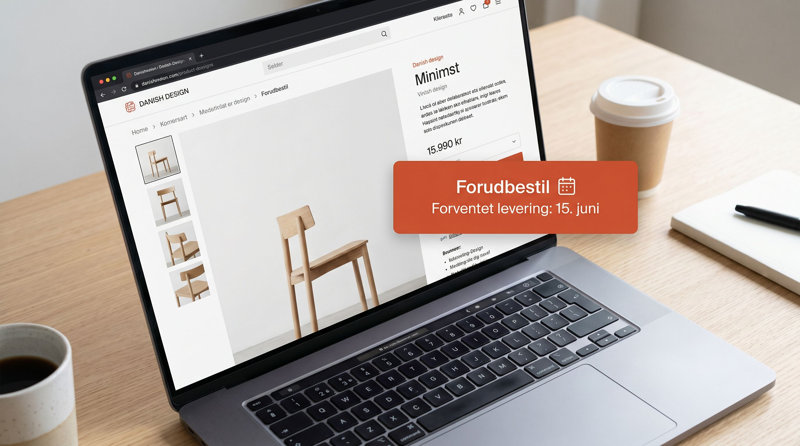

Pre-order og backorder er to af de mest misbrugte funktioner i webshops. Brugt rigtigt kan de redde omsaetningen i perioder med lagerudfordringer. Brugt forkert koester de dig kunder, anmeldelser og tillid.
Problemet er at mange webshops aktiverer dem i panik, uden en plan for hvad der sker naest. Det er her tingene gaar galt.
Her er hvornaar det virker, hvornaar det slaar fejl, og hvad du skal have paa plads inden du trykker paa knappen.
👉 SmartPack viser dig lagerstatusser i realtid og sender automatisk besked til kunder ved forsinkelser. Se hvordan det virker
Forskellen paa pre-order og backorder
Pre-order er naar kunden bestiller et produkt der endnu ikke er ankommet til lageret eller lanceret. Det er en planlagt salgsmodel, typisk brugt til nye produkter, begransede udgaver eller varer med lang leveringstid fra leverandoer.
Backorder er naar et produkt normalt er paa lager, men midlertidigt er udsolgt. Kunden ved at det normalt kan kobes, og accepterer at vente paa at lageret fyldes op igen.
Begge modeller kraever det samme af dig: aerlighed om leveringstid og proaktiv kommunikation.
Hvornaar pre-order virker
Pre-order virker bedst naar disse betingelser er opfyldt:
- Du kender leveringsdatoen med rimelig sikkerhed. En dato der rykker sig to gange er vaerre end ingen dato.
- Produktet har en fanbase der vil vente. Begransede udgaver, efterlaengtede produkter og saesonvarer med loyal kundekreds egner sig til pre-order.
- Du er klar til at kommunikere. Pre-order uden opfolgning er en opskrift paa reklamationer.
- Du har en refusionspolitik paa plads. Kunden skal vide hvad der sker hvis ordren forsinkes yderligere.
Hvornaar backorder virker
Backorder virker naar du har et produkt med stabil eftersporgsel, en kendt genopfyldningstid og kunder der er vant til at vente. Det er ikke en loesning for produkter der jivnligt er udsolgt fordi dit lagerstyring er mangelfuldt.
Hvis du aktiverer backorder paa et produkt der er udsolgt for tredje gang paa to maaneder, er signalet til kunden at du ikke har styr paa dit lager. Tilliden eroederes gradvist.
De fire fejl der oedelaegger tilliden
Her er fejlene vi ser oftest:
- Uklar leveringsdato. "Forventes snarest" er ikke en dato. Kunder accepterer ventetid, men ikke usikkerhed.
- Ingen opdatering naar datoen rykker sig. Hvis leveringsdatoen aendrer sig og kunden ikke faar besked, er det et tillidsbrud.
- Backorder paa produkter med ukendt genopfyldningstid. Hvis du ikke ved hvornaar varen er paa lager igen, skaer du hellere den fra sortimentet midlertidigt.
- For lang ventetid uden kompensation. Mere end 2-3 uger kraever typisk noget ekstra: gratis fragt, rabatkode eller personlig besked.
Hvad du skal have paa plads i SmartPack
SmartPack giver dig lagerstatus pr. vare i realtid, automatiske kundebeskeder ved forsinkede backorder-varer og overblik over hvilke varer der oftest rammer backorder-status. Det betyder at du kan handle proaktivt fremfor reaktivt.
Naeste gang du overvejer at aktivere pre-order eller backorder: tjek leverandorens leveringstid, skriv en kommunikationsplan, og sat en dato i din kalender til at sende en opfolgningsmail til kunderne.